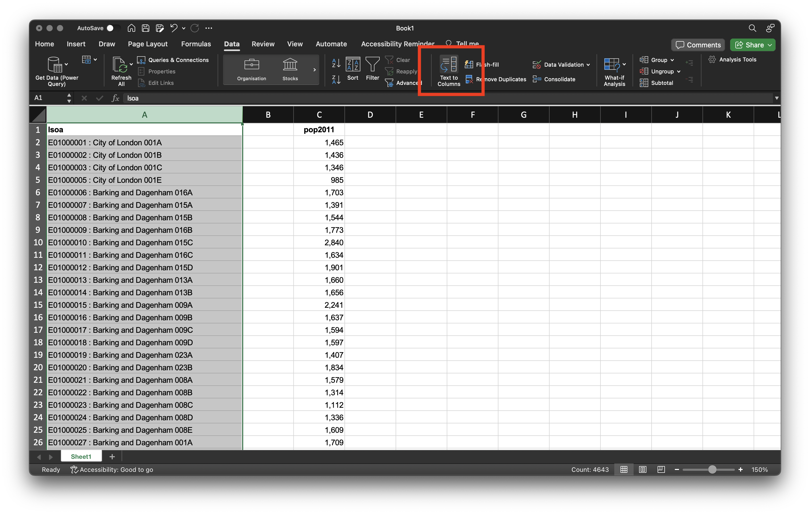
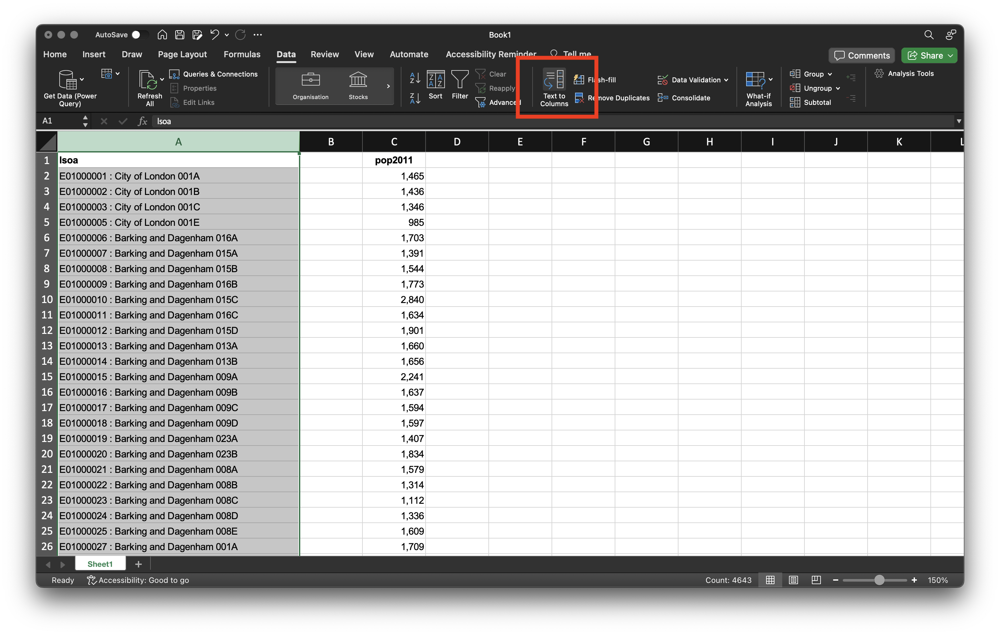
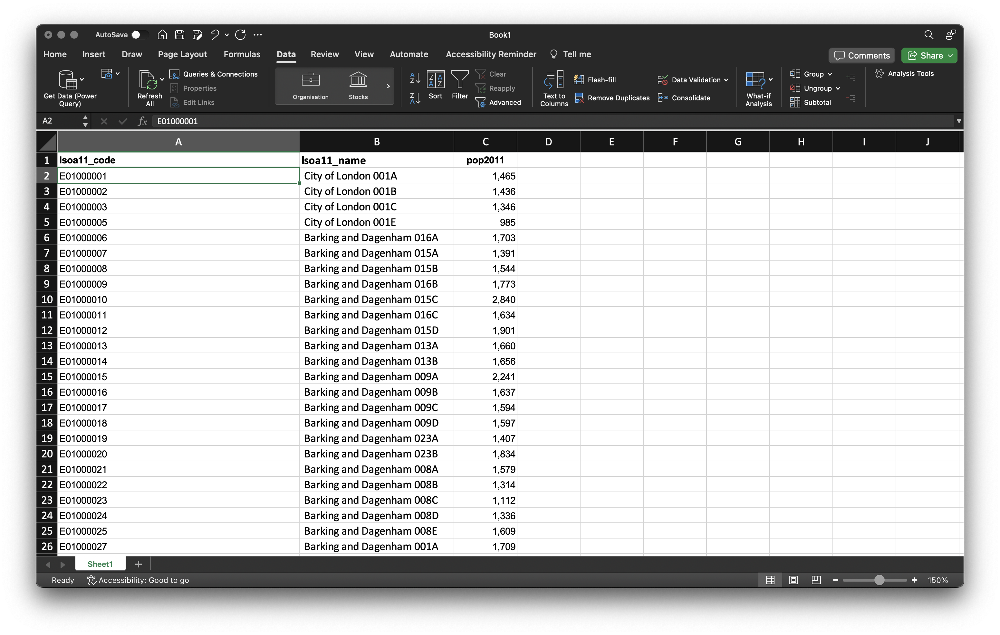
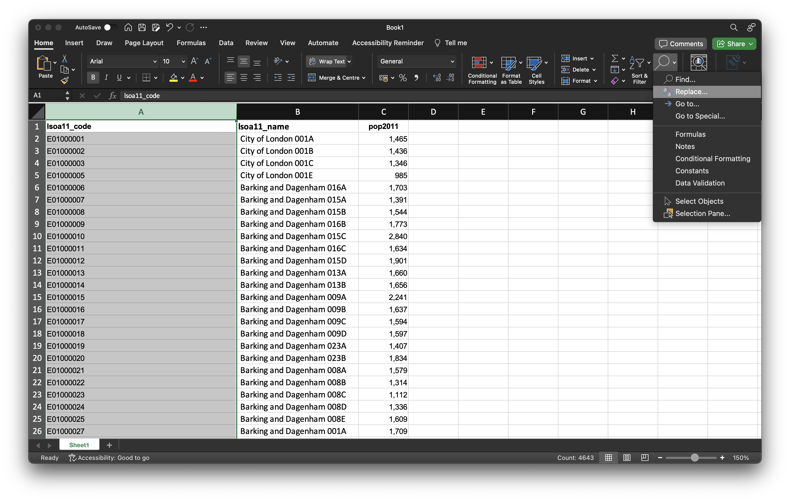
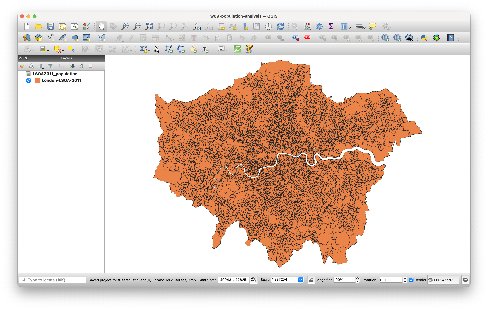
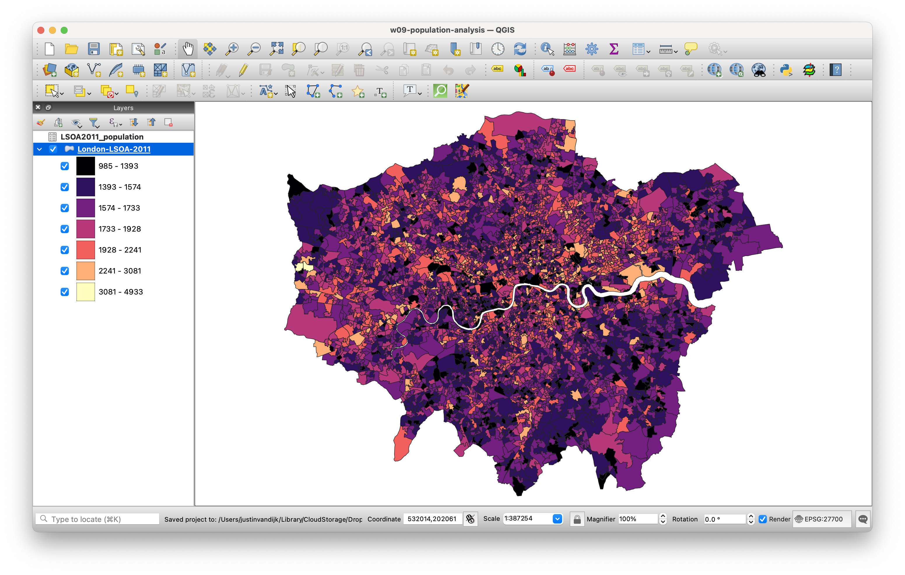

lsoa columns and find the Text to Columns menu option. Note that column B does not contain any data.This week’s lecture introduced foundational concepts in GIScience and GIS software, with a focus on how spatial data is represented. Building on these ideas, the practical component allows you to apply this knowledge by creating thematic maps using QGIS.
You can download the slides of this week’s lecture here: [Link].
QGIS is an open-source graphic user interface GIS with many community developed add-on packages that provide additional functionality to the software. You can download and install QGIS on your personal machine by going to the QGIS website: [Link].
QGIS is available through Desktop@UCL Anywhere as well as that it can be accessed on UCL computers across campus. Instead of installing the software, you may want to consider using this version.
If you want to install QGIS on your personal computer, we recommend installing the Long Term Release (QGIS 3.34 LTR), as this version is the most current and stable. For Windows users, please note that the QGIS installation process may take some time, so be patient during the setup.
After installation, launch QGIS to confirm that the installation was successful.
In this tutorial, we will map the population distribution in London using Census estimates from 2011 and 2021. When working with quantitative data, much of the effort goes into data preparation rather than analysis. It is often said that 80% of the time is spent on tasks like finding, retrieving, managing, and processing data. This is because the data you need is rarely in the format required for analysis. Before we can create our maps, we therefore have to go through several data preparation and cleaning steps.
To get started, download a copy of the 2011 and 2021 London LSOAs spatial boundaries via the links provided below. Save these files in your project folder under data.
| File | Type | Link |
|---|---|---|
| London LSOA 2011 Spatial Boundaries | GeoPackage |
Download |
| London LSOA 2021 Spatial Boundaries | GeoPackage |
Download |
Administrative geographies, such as LSOAs, are typically updated as populations change, meaning their boundaries are subject to periodic or occasional adjustments. For this reason, we must use the 2011 LSOA boundaries to map the 2011 Census data and the 2021 LSOA boundaries for the 2021 Census data.
For the spatial boundaries of the London LSOAs, you may have noticed that, instead of providing a collection of files known as a shapefile, we have supplied a GeoPackage. While shapefiles remain in use, GeoPackage is a more modern and portable file format. Have a look at this article on towardsdatascience.com for an excellent explanation on why one should use GeoPackage files over shapefiles, where possible: [Link]
For our population data, we will use the 2011 and 2021 Census population counts that are made available by the Office for National Statistics through their Nomis portal.
To get the 2011 Census population counts, you should:
data folder as LSOA2011-population.xlsx.To get the 2021 Census population counts, you should:
data folder as LSOA2021-population.xlsx.When opening the LSOA spreadsheets in Excel, you will notice additional rows of information at the top. This extra data can cause issues in QGIS, so we need to clean the dataset. To avoid errors later on, we will also save the cleaned data in csv format.
Open the LSOA2011-population.xlsx file in Excel. We have two main columns: one with identifying information that distinguishes each area from one another and one with population counts. In addition, there are some less informative rows at the top of the spreadsheet. To prepare the data we need to take several steps.
LSOA2011-population.xlsx spreadsheet, select and delete row 1 to 8: highlight the rows, then click on Edit in the menu bar and click on Delete.Note that the Edit menu bar option might be named differently, depending your version of Excel and/or your operating system.
lsoa and pop2011, respectively.pop2011 column that is stored in column B and paste these into column C. You now should have a column without any data sat between the lsoa and pop2011 columns.lsoa column and in the Data menu click on the Text to Columns menu button.
lsoa columns and find the Text to Columns menu option. Note that column B does not contain any data.Note that the Text to Columns function might be elsewhere in the menu depending on your version of Excel and/or your operating system.
: (colon) into the Other box. Click Finish.lsoa column to lsoa11_code and change the name of the now populated column B to lsoa11_name.
lsoa11_name as column to sort your data on. Click OK.You can make this process a bit less tedious by using keyboard shortcuts. On MacOS you can use: cmd + f to open up the find menu, cmd + x to cut data, and cmd + v to paste data. On Windows you can use: ctrl + f to open up the find menu, ctrl + x to cut data, and ctrl + v to paste date.
Once you are done cutting and pasting, you should have 4,836 rows of data in your second spreadsheet; this count includes your column names.
| London Boroughs | |
|---|---|
| Westminster | Sutton |
| Kensington and Chelsea | Crodyon |
| Hammersmith and Fulham | Bromley |
| Wandsworth | Lewisham |
| Lambeth | Greenwich |
| Southwark | Bexley |
| Tower Hamlets | Havering |
| Hackney | Barking and Dagenham |
| Islington | Redbridge |
| Camden | Newham |
| Brent | Waltham Forest |
| Ealing | Haringey |
| Hounslow | Enfield |
| Richmond upon Thames | Barnet |
| Kingston upon Thames | Harrow |
| Merton | Hillingdon |
lsoa11_code column. These spaces are not immediately noticeable, as they appear at the end of the LSOA codes without any visible characters following them. Although this may seem minor, it can cause problems when using the data. To fix this, highlight the entire lsoa11_code column in your new spreadsheet, go to the Home menu, and select Replace under the Find & Select menu.
whitespace, using the spacebar on your keyboard, keep the Replace with box empty, and click on Replace all. You should get a message that 4,835 replacements have been made.Before saving your data, one final bit of formatting is needed for the population field. Currently, commas are used to separate the thousands in the values. If we leave these commas, QGIS will interpret them as decimal points, resulting in incorrect population figures.
pop2011 column, highlight the entire column and right-click on the C cell. Click on Format Cells and set the cells to Number with 0 decimal places. You should see that the commas are now removed from your population values.csv file into your data folder as LSOA2011-population.csv.After saving the file, Excel may prompt a warning about possible data loss. You can safely ignore this message, as it typically relates to lost markup information (e.g. fonts, colours, bold items) or Excel formulas (e.g. means, medians). If prompted, choose to save as CSV UTF-8 (Comma-delimited) (.csv).
Be aware that depending on your operating system’s language settings (e.g. Windows, macOS, Linux), csv files might use different characters instead of commas. While this may seem trivial, it can lead to issues when importing data into another program. Therefore, it is wise to check your csv file in a plain text editor (e.g. TextEdit on macOS or Notepad on Windows). If you see semicolons (;) instead of commas (,), you can quickly fix this by finding and replacing every semicolon with a comma, just as we did with the whitespace characters in Excel.
Now the 2011 data is prepared, we can move on to the 2021 data. Open the LSOA2021-population.xlsx in Excel. You will notice that the file is formatted largely the same as the LSOA2011-population.xlsx file. However, this time the data for all Local Authority Districts are grouped together, with all data also grouped by region. This arrangement simplifies our task, as we can easily cut the data for each of the 32 Boroughs and the City of London in one go.
LSOA2021-population.xlsx spreadsheet, cut (Edit -> Cut) all cells from columns A to B and rows 19,790 to 24,783 and paste these into this new spreadsheet.lsoa column, remove the trailing whitespace characters from the LSOA code column, and remove the decimal commas in the population count column.csv into your data folder as LSOA2021-population.csv with the following column names: lsoa21_code, lsoa21_name, and pop2021.Again make sure you did not miss any LSOAs. You should end up with 4,995 rows of data in this second spreadsheet.
We will now use QGIS to map our prepared population data. To achieve this, we first need to join our table data to our spatial datasets.
w09-population-analysis. Remember to save your work throughout the practical.A CRS is a framework that defines how spatial data is represented in relation to the Earth’s surface. It includes both a coordinate system (which specifies how points in space are represented using numbers) and a set of parameters that define the relationship between those coordinates and actual locations on the Earth.
Now the project is set up, we can start by loading our 2011 spatial layer.
dataLondon-LSOA2011.gpkg file and click Open. Then click Add. You may need to close the box after adding the layer.Next, we will load our 2011 population csv.
London-LSOA-2011.csv file in your data folder. Your file format should be set to csv. You should further have the following boxes ticked under the Record and Field options menu: Decimal separator is comma, First record has field names, Detect field types and Discard empty fields.
We can now join this table data to our spatial data using an attribute join.
An atribute join allows you to link two datasets together based on a common attribute that facilitates the matching of rows. To perform an attribute join, you need a single unique identifying field for your records in both datasets. This can be a code, a name, or any other string of information. For the join to work, it is essential that the ID field is consistent across both datasets, meaning there should be no typos or spelling mistakes.

Because both our datasets contain both LSOA names and LSOA codes, we will use the LSOA codes as basis for our join. Unlike names, codes reduce the likelihood of errors and mismatches since they are not dependent on spelling.
LSOA2011 spatial layer, click on Properties and then click on the Joins tab.
LSOA2011-population.lsoa11_code.lsoa11cd.pop2011 field.We can now check to see if our join has worked by opening up the Attribute Table of our LSOA2011 spatial layer. We should see that the spatial layer has a new Population field attached to it.
We can now finally map the 2011 population distribution of London.
London-LSOA-2011 layer and click on Properties -> Symbology.
pop2011 as your column.You should now be looking at something like this:

While the map above is acceptable for today, it is technically incorrect because it displays absolute numbers on a choropleth. You should never do this unless the spatial units are identical in size, as larger areas will draw disproportionate attention and skew the visualisation.
To export your map to an image, click on Project -> Import/Export -> Export to Image.
This concludes this week’s tutorial. Now complete the following homework tasks:
London-LSOA2021.gpkg into QGIS.LSOA2021-population.csv into QGIS.Paste the exported map into the appendix of your assignment, include a few sentences interpreting the results. Consider whether there are any noticeable changes in the population distribution between 2011 and 2021.
This week we spent a lot of time preparing and cleaning our datasets, followed by a simple visualisation of the population in London in 2011 and 2021. Next week, we will move forward with working in QGIS and conduct some point data aggregation. For today, however, we are done!